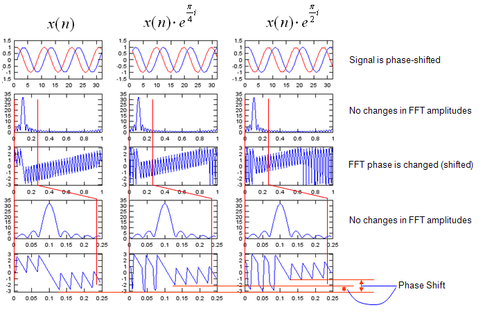

| FFT (Fast Fourier Transform) |
|
Probably Fourier Transform would be a mathematical tool which is the most widely used in engineer area. I would not explain in details how Fourier Transform works mathematically, you can have a lot of information from internet or at least you would go through at least a couple of month for this topic during your university course.
When I think about the word "Fourier" (Actually a person's name), I have two images as shown below. One is a Fourier Series Expension and the other one is Fourier Transform. With Fourier Series expansion, you would have a continous function made up of very simple components (sin() + cos()) for any data whether the data is continous or non-continous. I am pretty sure that you would learn how to create a sequence of (sin() + cos()) to approximate computer clock-like rectangular pulse. (You could easily find tutorial or even many of Java application from internet).
Another image that pops up in my mind when I think about 'Fourier' is 'Fourier Transform'. One of the most typical usage (or purpose) of courier transform is to convert a time domain data into a frequency domain data and this section will mostly focused on this 'Fourier Transform'. (I think I am hearing those questions from many reader... saying ... "What is time domain data ? What is frequecy domain data ? why we want to convert the time domain data into frequency domain data ?". All of these are very good question. Try very hard until you get your own answers for these questions -:)).
I would not explain much of the theory about FFT, you would already get too much of it from text book or from on-line. As in other pages in my site, I will put as much examples and plots as possible just to make you "feel" about it. Of course, this pages would keep being extended as I find more examples that would help you with "intuitive" understanding of FFT.
See following plots. As you see in (a), (b), (c), (d), the length of the data for the signal are all the same. But length of zero value being appended to the signal data are different resulting in different number of data for fft. Just try to 'feel' or 'sense' the general trand. what kind of difference you see in the fft plot as the length of appended zero gets increased ? Do you see the fft plot gets smoother as the length of trailing zeros (zero pad) gets longer ?
Try following Octave/Matlab code and play with following lines marked in blue.
n = [0:31]; x = cos(2*pi*n/10);
x1 = x; x2 = [x zeros(1,64-length(x1))]; x3 = [x zeros(1,128-length(x1))]; x4 = [x zeros(1,256-length(x1))];
fft_x1 = abs(fft(x1)); fft_x2 = abs(fft(x2)); fft_x3 = abs(fft(x3)); fft_x4 = abs(fft(x4));
f1 = [0:length(fft_x1)-1]/length(fft_x1); f2 = [0:length(fft_x2)-1]/length(fft_x2); f3 = [0:length(fft_x3)-1]/length(fft_x3); f4 = [0:length(fft_x4)-1]/length(fft_x4);
subplot(4,2,1); plot(x1,'r-'); axis([0 length(x4) -1.5 1.5]); subplot(4,2,2); plot(f1,fft_x1);
subplot(4,2,3); plot(x2,'r-'); axis([0 length(x4) -1.5 1.5]); subplot(4,2,4); plot(f2,fft_x2);
subplot(4,2,5); plot(x3,'r-'); axis([0 length(x4) -1.5 1.5]); subplot(4,2,6); plot(f3,fft_x3);
subplot(4,2,7); plot(x4,'r-'); axis([0 length(x4) -1.5 1.5]); subplot(4,2,8); plot(f4,fft_x4);
See following plots. As you see in (a), (b), (c), (d), the total of the fft data (signal + zero padding) are all the same. But the number of cycles of the signal are different. Just try to 'feel' or 'sense' the general trand. what kind of difference you see in the fft plot as the length of appended zero gets increased ? Do you see the peak gets higher and sharper as the number of signal cycles gets larger ?
Try following Octave/Matlab code and play with following lines marked in blue. n = [0:29]; x = cos(2*pi*n/10);
x1 = [x zeros(1,256-1*length(x))]; x2 = [x x zeros(1,256-2*length(x))]; x3 = [x x x zeros(1,256-3*length(x))]; x4 = [x x x x zeros(1,256-4*length(x))];
fft_x1 = abs(fft(x1)); fft_x2 = abs(fft(x2)); fft_x3 = abs(fft(x3)); fft_x4 = abs(fft(x4));
f1 = [0:length(fft_x1)-1]/length(fft_x1); f2 = [0:length(fft_x2)-1]/length(fft_x2); f3 = [0:length(fft_x3)-1]/length(fft_x3); f4 = [0:length(fft_x4)-1]/length(fft_x4);
subplot(4,2,1); plot(x1,'r-'); axis([0 length(x4) -1.5 1.5]); subplot(4,2,2); plot(f1,fft_x1); axis([0 1 0 60]);
subplot(4,2,3); plot(x2,'r-'); axis([0 length(x4) -1.5 1.5]); subplot(4,2,4); plot(f2,fft_x2); axis([0 1 0 60]);
subplot(4,2,5); plot(x3,'r-'); axis([0 length(x4) -1.5 1.5]); subplot(4,2,6); plot(f3,fft_x3); axis([0 1 0 60]);
subplot(4,2,7); plot(x4,'r-'); axis([0 length(x4) -1.5 1.5]); subplot(4,2,8); plot(f4,fft_x4); axis([0 1 0 60]);
Abrupt Changes in Time Domain Data
See following plots. As you see in (a), (b), (c), (d), the total of the fft data (signal + zero padding) are all the same. But the number of cycles of the signal are also same. Then what is the difference ? Comparing (a) and (b), you would notice a sudden phase change in the middle of the signal (b). This abrupt change created the distortion in fft as shown in (b_f). Comparing (a) and (c), you would notice (c) is rectangular form of signal meaning that there are abrupt amplitude changes at rising and falling edges of the pulses. But in this case, this abrupt change does not create any distortion in fft plot. In stead, it creates a couple of additional peaks in fft (c_f). If you study only a little bit of Fourier Series, you would understand why these additional peaks show up. Comparing (c) and (d), you would notice a sudden phase change in the middle of the signal (d). This abrupt change created the distortion in fft as shown in (d_f).
Try following Octave/Matlab code and play with following lines marked in blue. n = [0:29]; x = cos(2*pi*n/10);
x1 = [x x zeros(1,256-2*length(x))]; x2 = [x -x zeros(1,256-2*length(x))]; x3 = [sign(x) sign(x) zeros(1,256-2*length(x))]; x4 = [sign(x) -sign(x) zeros(1,256-2*length(x))];
fft_x1 = abs(fft(x1)); fft_x2 = abs(fft(x2)); fft_x3 = abs(fft(x3)); fft_x4 = abs(fft(x4));
f1 = [0:length(fft_x1)-1]/length(fft_x1); f2 = [0:length(fft_x2)-1]/length(fft_x2); f3 = [0:length(fft_x3)-1]/length(fft_x3); f4 = [0:length(fft_x4)-1]/length(fft_x4);
subplot(4,2,1); plot(x1,'r-'); axis([0 length(x4) -1.5 1.5]); subplot(4,2,2); plot(f1,fft_x1); axis([0 1 0 40]);
subplot(4,2,3); plot(x2,'r-'); axis([0 length(x4) -1.5 1.5]); subplot(4,2,4); plot(f2,fft_x2); axis([0 1 0 40]);
subplot(4,2,5); plot(x3,'r-'); axis([0 length(x4) -1.5 1.5]); subplot(4,2,6); plot(f3,fft_x3); axis([0 1 0 40]);
subplot(4,2,7); plot(x4,'r-'); axis([0 length(x4) -1.5 1.5]); subplot(4,2,8); plot(f4,fft_x4); axis([0 1 0 40]);
In all the examples described above, the signal (the input value to FFT process) was all real value. But in most of real situation, we use the signals presented as a sequence number of complex numbers.
In this section, we will see the difference between FFT for real values and FFT for complex values. First, I created a script for various experiments in this section. By changing a,b,p1,p2, I will create many different cases to think about.
n = [0:256]; a = 1.0; b = 0.8; p1 = 0.0; p2 = 0.2*pi;
x = a*cos(2*pi*n/20+p1) + j*b*sin(2*pi*n/20+p2);
x1 = [real(x)]; x2 = [imag(x)]; x3 = [x];
fft_x1 = fft(x1); fft_x2 = fft(x2); fft_x3 = fft(x3);
fft_x1_abs = abs(fft_x1); fft_x2_abs = abs(fft_x2); fft_x3_abs = abs(fft_x3);
fft_x1_arg = arg(fft_x1); fft_x2_arg = arg(fft_x2); fft_x3_arg = arg(fft_x3);
f1 = [0:length(fft_x1)-1]/length(fft_x1); f2 = [0:length(fft_x2)-1]/length(fft_x2); f3 = [0:length(fft_x3)-1]/length(fft_x3);
subplot(4,3,1); plot(x1,'r-'); axis([0 length(x3) -1.5 1.5]); subplot(4,3,4); plot(x1([1:length(x1)/8]),'r-'); axis([0 length(x1)/8 -1.5 1.5]); subplot(4,3,7); plot(f1,fft_x1_abs);axis([0 1 0 300]); subplot(4,3,10); plot(f1([1:length(x1)/8]),fft_x1_abs([1:length(x1)/8]));axis([0 1/8 0 300]);
subplot(4,3,2); plot(x2,'b-'); axis([0 length(x3) -1.5 1.5]); subplot(4,3,5); plot(x2([1:length(x2)/8]),'b-'); axis([0 length(x2)/8 -1.5 1.5]); subplot(4,3,8); plot(f2,fft_x2_abs);axis([0 1 0 300]); subplot(4,3,11); plot(f2([1:length(x2)/8]),fft_x2_abs([1:length(x2)/8]));axis([0 1/8 0 300]);
subplot(4,3,3); plot(real(x3),'r-',imag(x3),'b-'); axis([0 length(x3) -1.5 1.5]); subplot(4,3,6); plot(real(x3([1:length(x3)/8])),'r-',imag(x3([1:length(x3)/8])),'b-'); axis([0 length(x2)/8 -1.5 1.5]); subplot(4,3,9); plot(f2,fft_x3_abs);axis([0 1 0 300]); subplot(4,3,12); plot(f3([1:length(x3)/8]),fft_x3_abs([1:length(x3)/8]));axis([0 1/8 0 300]);
< Complex Number FFT - Example 1 >
First, I created a sample signal, the real part of which is cos() graph and the imaginary part of which is sin() curve. The a,b,p1,p2 value to create this example is as follows.
a = 1.0; b = 1.0; p1 = 0.0; p2 = 0.0 You see three columns A,B,C. A is a real value sequence created by a*cos(2*pi*n/20+p1), B is also a real value sequence created by b*sin(2*pi*n/20+p2) and C is a complex value sequence created by a*cos(2*pi*n/20+p1) + j*b*sin(2*pi*n/20+p2). Since 'C' signal is made up of pure 'sin' (sin() with no phase shift) and pure cos (cos() with no phase shift) the arg of the complex value (the phase difference between the real part and imaginary part) is exactly 90 degree (pi/4) as indicated as 'p' in Column 'C', row (c) plot. Now the most important part is the graphs on row (c). What do you think the differences among the three graphs on row (c) ? At the first two graphs which are both the result of FFT of real value sequence, you see two peaks, but in the third graph which is the result of FFT of a complex value sequence, you see only one peak. Is there any other differences except the number of peaks in FFT plot ? You can find another difference in graphs on row (d). You will notice that the height of the peak of complex valued FFT is much greater than the height of the peak of real valued FFT. How big is it ? In conclusion, in this specific case the height of peak on (column C, row d) is twice as high as (column A, row d) or (column B, row d). Then you would have question that comes naturally. What is the meaning (implication) of these differences (i.e, size of peak difference or number of peak differences) ? For now, I don't know how to explain this difference easily... but I will get back to this question later. How much 'later' ? I don't know for now -:). Try find your own answer in the meantime -:)
< Complex Number FFT - Example 2 >
Now let me have a question. If a signal is made up of any form of complex numbers, does it produce only ONE peak as we saw in previous example ? Let's look at the following example to find the answer to this question. I set the variables for my script as follows. (You would notice I set a non-zero value for p2). a = 1.0; b = 1.0; p1 = 0.0; p2 = 0.2*pi; You see three columns A,B,C. A is a real value sequence created by a*cos(2*pi*n/20+p1), B is also a real value sequence created by b*sin(2*pi*n/20+p2) and C is a complex value sequence created by a*cos(2*pi*n/20+p1) + j*b*sin(2*pi*n/20+p2). Since 'C' signal is made up of pure 'sin' (sin() with no phase shift) and cos (in this case this cos() has a phase shift defined by p2). Now the arg of the complex value (the phase difference between the real part and imaginary part) is not exactly 90 degree (pi/4) as indicated as 'p' in Column 'C', row (c) plot.
Now let's look into the graphs on row (c). What do you think the differences among the three graphs on row (c) ? Even though the phase of signal B has been changed, the fft graph for the data doesn't seem to be changed in any way at least in terms of number of peaks or the height of the peak. But you would notice a big difference between this example and previous example. It is that now even the fft of the complex signal has another peak even though the size of the peak is much smaller than the first peak. You may 'sense' this second peak would be related to the arg changes of the complex value data. To have more concrete 'feeling', try change p1, p2 into various different value and run the script.
Is there any other differences except the number of peaks in FFT plot ? You can find another difference in graphs on row (d). You will notice that the height of the peak of complex valued FFT is much greater than the height of the peak of real valued FFT. How big is it ? But in this case, the large peak of colum C does not seem to be exactly twice as high as (column A, row d) or (column B, row d). If you compare the result of various trials of changing p1, p2, you will have some 'feeling' about the size of peak changes. I will leave this to you.
< Complex Number FFT - Example 3 >
Let's make another question. What if I change the amplitude of real or imaginary part of the complex signal without introducing any phase shift ? My trial parameter is as follows. You should notice that a and b is not the same now. a = 1.0; b = 0.8; p1 = 0.0; p2 = 0.0; You see three columns A,B,C. A is a real value sequence created by a*cos(2*pi*n/20+p1), B is also a real value sequence created by b*sin(2*pi*n/20+p2) and now the amplitude of b*sin(2*pi*n/20+p2) is smaller than a*cos(2*pi*n/20+p1). C is a complex value sequence created by a*cos(2*pi*n/20+p1) + j*b*sin(2*pi*n/20+p2). 'C' signal is made up of pure 'sin' (sin() with no phase shift) and cos. Amplitude of real part and amplitude of imaginary part is not same as you see in m1,m2 in the graph (column C, row (b)). Now the arg of the complex value (the phase difference between the real part and imaginary part) is not exactly 90 degree (pi/4) as indicated as 'p' in Column 'C', row (c) plot.
Now let's look into the graphs on row (c). What do you think the differences among the three graphs on row (c) ? Even though the phase of signal B has been changed, the fft graph for the data doesn't seem to be changed in any way at least in terms of number of peaks or the height of the peak. But you would notice a big difference between this example and previous example. It is that now even the fft of the complex signal has another peak even though the size of the peak is much smaller than the first peak. You may 'sense' this second peak would be related to the arg changes of the complex value data. To have more concrete 'feeling', try change a, b into various different value and run the script.
Is there any other differences except the number of peaks in FFT plot ? You can find another difference in graphs on row (d). You will notice that the height of the peak of complex valued FFT is much greater than the height of the peak of real valued FFT. How big is it ? But in this case, the large peak of colum C does not seem to be exactly twice as high as (column A, row d) or (column B, row d). If you compare the result of various trials of changing a, b, you will have some 'feeling' about the size of peak changes. I will leave this to you.
< Complex Number FFT - Example 4 >
In previous examples, we saw how separate changes in the amplitude and phase of the complex value data affect the result of FFT. Now let's change both amplitude and phase at the same time see how it influence fft result.
My trial parameter is as follows. You should notice that a and b is not the same now. p1 and p2 is not the same either . a = 1.0; b = 0.8; p1 = 0.0; p2 = 0.2*pi;
You see three columns A,B,C. A is a real value sequence created by a*cos(2*pi*n/20+p1), B is also a real value sequence created by b*sin(2*pi*n/20+p2) and now the amplitude of b*sin(2*pi*n/20+p2) is smaller than a*cos(2*pi*n/20+p1). C is a complex value sequence created by a*cos(2*pi*n/20+p1) + j*b*sin(2*pi*n/20+p2). 'C' signal is made up of pure 'sin' (cos() with no phase shift) and 'sin'(sin() with phase shift). Now the arg of the complex value (the phase difference between the real part and imaginary part) is not exactly 90 degree (pi/4) as indicated as 'p' in Column 'C', row (c) plot. and Amplitude of real part and imaginary part is also different.
Now let's look into the graphs on row (c). What do you think the differences among the three graphs on row (c) ? Even though the phase of signal B has been changed, the fft graph for the data doesn't seem to be changed in any way at least in terms of number of peaks or the height of the peak. But you would notice a big difference between this example and previous example. It is that now even the fft of the complex signal has another peak even though the size of the peak is much smaller than the first peak. You may 'sense' this second peak would be related to the arg changes of the complex value data. To have more concrete 'feeling', try change a, b and p1,p2 into various different value and run the script.
Is there any other differences except the number of peaks in FFT plot ? You can find another difference in graphs on row (d). You will notice that the height of the peak of complex valued FFT is much greater than the height of the peak of real valued FFT. How big is it ? But in this case, the large peak of colum C does not seem to be exactly twice as high as (column A, row d) or (column B, row d). If you compare the result of various trials of changing a, b and p1,p2, you will have some 'feeling' about the size of peak changes. I will leave this to you.
If you look carefully into the mathemtical formual for fourier transform, you would notice exp(-i t) part which is a complex number) and this part applies to every point of the input data. Therefore, the result of FFT is always a sequence of complex number regardless of whether the fft input is real number or complex number. It means each data point (a complex number) in fft result has it's own magnitue and phase. All the fft graph shown in previous sections is based on the magnitude of the fft result, but there are some cases where not only the magnitude part but also phase (arg or angle) part is important. (One example for this kind of case is 'filter design'). In this case, we normaly use both magnitude plot and phase plot to characterize the fft result.
In this section, we would see how the phase value of fft can be represented. To see how most of the mathmatical software represent phase (angle), let's start with a simple and rotating complex value sequence as shown below.
(a) shows the graph of the complex value sequence. Red curve represent the real part and blue curve represent the imaginary part. (c) shows the graph of the complex value in polar cordinate (or parametric coordinate). As you see, this complex sequence continuously rotating. It means the angle part just keep increasing continuously. But if you plot the phase (angle) in cartesian coordinate (rectangular) plot, you would see abrupt phase changes periodically as shown in (b). This is because of the way the computer software calcuate the phase (angle) of the complex number. So you should be careful about interpreting the phase values of the fft result. Especially when you see an abrupt phase changes (discontinuity of the phase value), you have to think about whether it is the discontinuity from the nature of input data or computer algorithm calculating the phase value.
For you intuitive understanding and various experiment, I wrote a small Octave (or Matlab) script as shown below. Just hange the value of a,b,p1,p2 and x (formula for signal generation) and see how the phase plot varies. As I always say, try as much as possible and try to make your own understanding. n = [0:256]; a = 1.0; b = 1.0; p1 = 0.0; p2 = 0.0;
x = a*cos(2*pi*n/20+p1) + j*b*sin(2*pi*n/20+p2);
subplot(5,1,1); plot(real(x),'r-',imag(x),'b-'); axis([0 length(x) -1.5 1.5]); subplot(5,1,2); plot(arg(x),'r-'); axis([0 length(x) -pi pi]); subplot(5,1,[3 4]); plot(real(x([1:21])),imag(x([1:21])),'b-',real(x([1:21])),imag(x([1:21])),'rx'); axis([-1.5 1.5 -1.5 1.5]); subplot(5,1,5); plot(arg(x([1:21])),'b-',arg(x([1:21])),'rx'); axis([0 21 -pi pi]);
Followings are just several examples that I tried and I would not explain much about this. Just take a look and have some feeling.
With the feeling (or some sense) you formed from previous example, let's see the result of the fft for the data we used in previous sections. I added the phase plot of each fft. For now, just try to have some impressions here.. I hope I can explain the meaning of these type of phase changes in filter design session in the future.
Following is the script for the above plot.
n = [0:31]; x = cos(2*pi*n/10);
x1 = x; x2 = [x zeros(1,64-length(x1))]; x3 = [x zeros(1,256-length(x1))];
fft_x1 = fft(x1); fft_x2 = fft(x2); fft_x3 = fft(x3);
fft_x1_abs = abs(fft_x1); fft_x2_abs = abs(fft_x2); fft_x3_abs = abs(fft_x3);
fft_x1_arg = arg(fft_x1); fft_x2_arg = arg(fft_x2); fft_x3_arg = arg(fft_x3);
f1 = [0:length(fft_x1)-1]/length(fft_x1); f2 = [0:length(fft_x2)-1]/length(fft_x2); f3 = [0:length(fft_x3)-1]/length(fft_x3);
subplot(5,3,1); plot(x1,'r-'); axis([0 length(x3) -1.5 1.5]); subplot(5,3,4); plot(f1,fft_x1_abs); subplot(5,3,7); plot(f1,fft_x1_arg);axis([0 1 -pi pi]); subplot(5,3,10); plot(f1([1:length(f1)/4]),fft_x1_abs([1:length(f1)/4])); subplot(5,3,13); plot(f1([1:length(f1)/4]),fft_x1_arg([1:length(f1)/4]));axis([0 1/4 -pi pi]);
subplot(5,3,2); plot(x2,'r-'); axis([0 length(x3) -1.5 1.5]); subplot(5,3,5); plot(f2,fft_x2_abs); subplot(5,3,8); plot(f2,fft_x2_arg);axis([0 1 -pi pi]); subplot(5,3,11); plot(f2([1:length(f2)/4]),fft_x2_abs([1:length(f2)/4])); subplot(5,3,14); plot(f2([1:length(f2)/4]),fft_x2_arg([1:length(f2)/4]));axis([0 1/4 -pi pi]);
subplot(5,3,3); plot(x3,'r-'); axis([0 length(x3) -1.5 1.5]); subplot(5,3,6); plot(f3,fft_x3_abs); subplot(5,3,9); plot(f3,fft_x3_arg);axis([0 1 -pi pi]); subplot(5,3,12); plot(f3([1:length(f3)/4]),fft_x3_abs([1:length(f3)/4])); subplot(5,3,15); plot(f3([1:length(f3)/4]),fft_x3_arg([1:length(f3)/4]));axis([0 1/4 -pi pi]);
Effect of multiplying Exp(p i) to the signal

n = [0:31]; x = exp(j*2*pi*n/10);
x1 = [x zeros(1,256-length(x))]; x2 = x1 .* exp(j*0.25*pi); x3 = x1 .* exp(j*0.5*pi);
fft_x1 = fft(x1); fft_x2 = fft(x2); fft_x3 = fft(x3);
fft_x1_abs = abs(fft_x1); fft_x2_abs = abs(fft_x2); fft_x3_abs = abs(fft_x3);
fft_x1_arg = arg(fft_x1); fft_x2_arg = arg(fft_x2); fft_x3_arg = arg(fft_x3);
f1 = [0:length(fft_x1)-1]/length(fft_x1); f2 = [0:length(fft_x2)-1]/length(fft_x2); f3 = [0:length(fft_x3)-1]/length(fft_x3);
subplot(5,3,1); plot(real(x1),'r-',imag(x1),'b-'); axis([0 length(n) -1.5 1.5]); subplot(5,3,4); plot(f1,fft_x1_abs); subplot(5,3,7); plot(f1,fft_x1_arg);axis([0 1 -pi pi]); subplot(5,3,10); plot(f1([1:length(f1)/4]),fft_x1_abs([1:length(f1)/4])); subplot(5,3,13); plot(f1([1:length(f1)/4]),fft_x1_arg([1:length(f1)/4]));axis([0 1/4 -pi pi]);
subplot(5,3,2); plot(real(x2),'r-',imag(x2),'b-'); axis([0 length(n) -1.5 1.5]); subplot(5,3,5); plot(f2,fft_x2_abs); subplot(5,3,8); plot(f2,fft_x2_arg);axis([0 1 -pi pi]); subplot(5,3,11); plot(f2([1:length(f2)/4]),fft_x2_abs([1:length(f2)/4])); subplot(5,3,14); plot(f2([1:length(f2)/4]),fft_x2_arg([1:length(f2)/4]));axis([0 1/4 -pi pi]);
subplot(5,3,3); plot(real(x3),'r-',imag(x3),'b-'); axis([0 length(n) -1.5 1.5]); subplot(5,3,6); plot(f3,fft_x3_abs); subplot(5,3,9); plot(f3,fft_x3_arg);axis([0 1 -pi pi]); subplot(5,3,12); plot(f3([1:length(f3)/4]),fft_x3_abs([1:length(f3)/4])); subplot(5,3,15); plot(f3([1:length(f3)/4]),fft_x3_arg([1:length(f3)/4]));axis([0 1/4 -pi pi]);
Effect of Multiplying Exp(f t i) to the signal
n = [0:31]; x = exp(j*2*pi*n/10);
x1 = [x zeros(1,256-length(x))]; x2 = [x .* exp(j*0.1*pi*n) zeros(1,256-length(x))]; x3 = [x .* exp(j*0.2*pi*n) zeros(1,256-length(x))];
fft_x1 = fft(x1); fft_x2 = fft(x2); fft_x3 = fft(x3);
fft_x1_abs = abs(fft_x1); fft_x2_abs = abs(fft_x2); fft_x3_abs = abs(fft_x3);
fft_x1_arg = arg(fft_x1); fft_x2_arg = arg(fft_x2); fft_x3_arg = arg(fft_x3);
f1 = [0:length(fft_x1)-1]/length(fft_x1); f2 = [0:length(fft_x2)-1]/length(fft_x2); f3 = [0:length(fft_x3)-1]/length(fft_x3);
subplot(5,3,1); plot(real(x1),'r-',imag(x1),'b-'); axis([0 length(n) -1.5 1.5]); subplot(5,3,4); plot(f1,fft_x1_abs); subplot(5,3,7); plot(f1,fft_x1_arg);axis([0 1 -pi pi]); subplot(5,3,10); plot(f1([1:length(f1)/4]),fft_x1_abs([1:length(f1)/4])); subplot(5,3,13); plot(f1([1:length(f1)/4]),fft_x1_arg([1:length(f1)/4]));axis([0 1/4 -pi pi]);
subplot(5,3,2); plot(real(x2),'r-',imag(x2),'b-'); axis([0 length(n) -1.5 1.5]); subplot(5,3,5); plot(f2,fft_x2_abs); subplot(5,3,8); plot(f2,fft_x2_arg);axis([0 1 -pi pi]); subplot(5,3,11); plot(f2([1:length(f2)/4]),fft_x2_abs([1:length(f2)/4])); subplot(5,3,14); plot(f2([1:length(f2)/4]),fft_x2_arg([1:length(f2)/4]));axis([0 1/4 -pi pi]);
subplot(5,3,3); plot(real(x3),'r-',imag(x3),'b-'); axis([0 length(n) -1.5 1.5]); subplot(5,3,6); plot(f3,fft_x3_abs); subplot(5,3,9); plot(f3,fft_x3_arg);axis([0 1 -pi pi]); subplot(5,3,12); plot(f3([1:length(f3)/4]),fft_x3_abs([1:length(f3)/4])); subplot(5,3,15); plot(f3([1:length(f3)/4]),fft_x3_arg([1:length(f3)/4]));axis([0 1/4 -pi pi]);
|